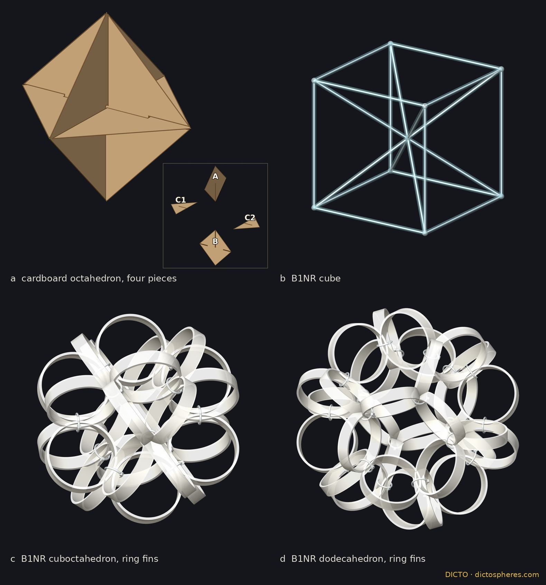
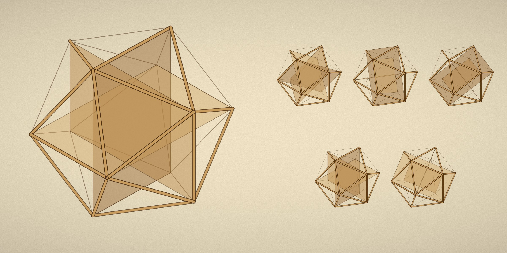
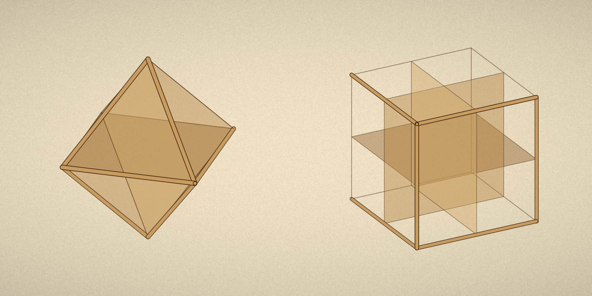
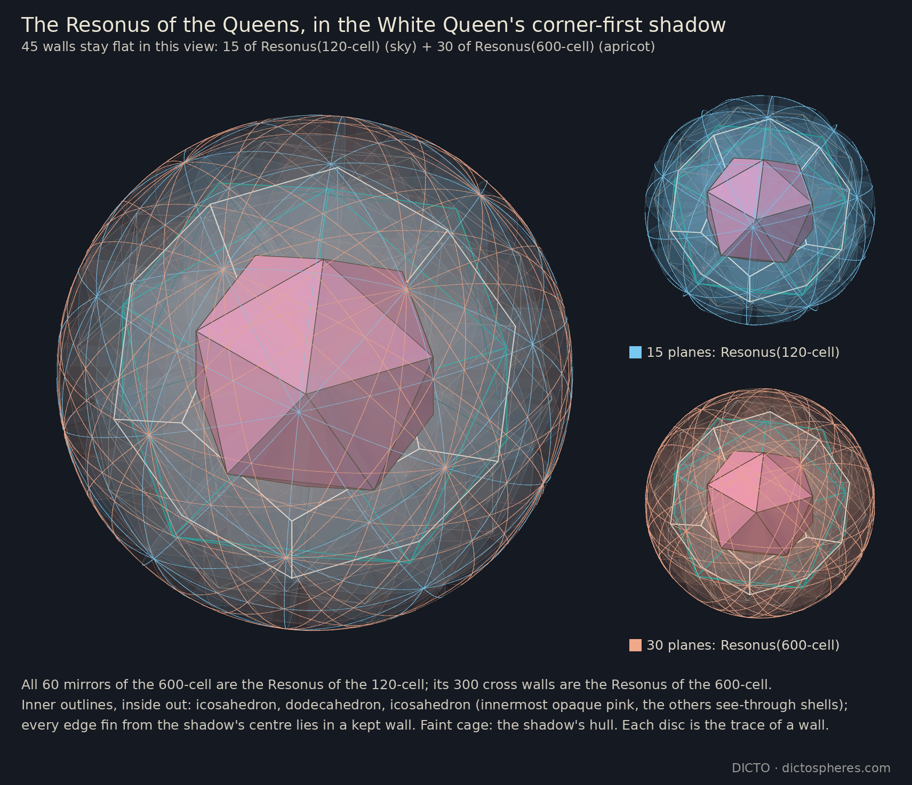

色即是空、空即是色
"Form is emptiness, emptiness is form." Heart Sutra†
Two frameworks of planes through the centre of a polyhedron: one through every edge, one parallel to every face. Exact for 163 catalogue rows (159 distinct polyhedra), for the permutohedron in every dimension, and for the regular polytopes of four dimensions
† Sanskrit śūnya, "empty" (Monier-Williams [47], p. 1085), is also the word for zero in Indian mathematics, where Brahmagupta's Brāhmasphuṭasiddhānta (628 CE; MacTutor [48]) gives rules for adding, subtracting, multiplying and dividing with it (ch. 18; Colebrooke 1817 [37], pp. 339–340). Its abstract noun śūnyatā, "emptiness", is a central term of the Heart Sutra ("rūpaṃ śūnyatā śūnyataiva rūpam", "form is emptiness, emptiness is form"; Müller and Nanjio 1884 [38]), a text whose Sanskrit version Nattier (1992) [39] argues was translated from a Chinese original.
DICTO builds all his PET-bottle and B1NR sculptures as Vacuus and hulls: skeletons, and empty. He sees the relevance of the Vacuus and the Resonus to current mathematics in their emptiness as well as their form, like the Heart Sutra.
Build a cube from six square pyramids with their tips at the centre, then take the six outer squares away. What stays is an empty frame: the twelve edges, eight struts from the centre to the corners, and between them twelve flat triangles, one on each edge, all meeting at the centre. DICTO came to this by building. DICTO built all four Vacuus frameworks around 2024 (Figure 1): a cube from his PET-bottle system B1NR, which showed him that a cube is six pyramids meeting at the centre; the octahedron's version from four slotted pieces of cardboard, three squares through one centre [1]; and, without hulls, a B1NR cuboctahedron and a B1NR dodecahedron with a bottle ring in every fin. The Latin vacuus means empty.

This paper is about the planes of such frames. The Vacuus of a polyhedron is the set of planes through its centre and one of its edges. Its sibling, which DICTO named the Resonus on 24 November 2026, is the set of planes through the centre parallel to one of its faces: each face plane slid back until it passes through the centre. For a centrally symmetric polyhedron the Resonus planes are the middle planes between opposite faces. Both are frameworks of planes, not filled shapes. Which polyhedra have the same Vacuus and Resonus? And what does each one know about the other?
The answer is the polar. Turn every face of P into a corner and every corner into a face, about the same centre: that is the polar P*. Both frameworks are read off it: each Vacuus plate of P is at right angles to an edge of P*, and each Resonus plane of P is at right angles to the line from the centre to a corner of P* (Theorem 4, one line from the face lattice of the polar). The Vacuus follows the edges, the Resonus follows the faces, and the polar exchanges them. Neither determines the other: the cuboctahedron, the truncated cube and the truncated octahedron have the same Resonus, 7 planes, and Vacuus of 4, 18 and 15 plates. Everything else in the paper turns on the polar.
The steps are these. Section 2 gives the definitions and the history, from #87 through #105 to #110, and back to Leonardo's empty frames for Pacioli. Section 3 proves that the Vacuus is of the heart kind exactly when the polyhedron is centrally symmetric (Theorem 1). Section 4 gives the exact catalogue of both frameworks for 163 rows (159 distinct polyhedra), with Theorems A and C and Remark B. Section 5 gives the pencil lemma (Theorem 2), a standard one-line formula for the plate of any ridge of any polytope, and Section 6 uses it to derive #105's plates of the permutohedron in every dimension (Theorem 3), whose number is A402191 [2, 4]. Section 7 treats the Resonus as an equal: the polar link (Theorem 4), duality (Theorem D), the permutohedron's Resonus as the resonance arrangement (Theorem 5), and four dimensions (Theorems 6 to 8). Section 8 turns from the planes to the empty regions between them: their number and the Betti numbers of the complexified complement, both read off one polynomial. Section 9 points to where the Vacuus meets DICTO's Scutoid-Frusta and Aequi. The paper closes with what it gives.
The main points, in three lines. On the permutohedron the Resonus is an arrangement already known to physics and algebraic geometry, the resonance arrangement, and the Vacuus is #105's count A402191, with a closed formula in every dimension, here derived from the pencil lemma. In four dimensions the 120-cell is the only regular polytope whose Resonus is all of its mirrors; we found no earlier statement of this. And the 360 walls that #110 found in the 600-cell, along Waegell and Aravind's 60 and 300 directions [40, 41], are two Resoni, the 600-cell's own and that of its polar, the 120-cell.
Let X be a convex polytope in ℝd and O a point in its interior; we put O at the origin. The ridges of X are its faces of dimension d − 2: edges when d = 3, two-faces when d = 4. Each ridge f spans with O exactly one hyperplane through O, its plate (O is not in the affine hull of f, because f lies in a facet hyperplane that misses O). The Vacuus of (X, O) is the set of plates, each with the ridges on it [3, §2]. A plate is a full sheet if with each ridge f it carries the opposite ridge −f, a shared sheet if it carries two or more ridges but is not full, and a single fin if it carries one. (X, O) is of the heart kind when every plate is a full sheet, of the non-heart kind when every plate is a single fin, and of the inherited heart kind otherwise. The names are DICTO's [3].
The Resonus of (X, O) is the set of hyperplanes through O parallel to a facet of X, parallel facets sharing one hyperplane. A Resonus hyperplane carries two facets when it comes from a pair of parallel facets, and one facet otherwise. The name is DICTO's (24 November 2026), from the Latin adjective resonus, "resounding, echoing" (Ovid; Lewis and Short); we found no use of it in mathematics (sources in the Sources checked). The name echoes the resonance arrangement, which on the permutohedron is exactly the Resonus (Theorem 5). For a zonotope the Resonus is a known object: the facet normals of the zonotope of an arrangement are the one-dimensional flats of that arrangement, so its Resonus is the adjoint arrangement (Aguiar and Mahajan [42, §6.3.12], as cited by Kühne [8]; [42] not opened). What we add is the construction for every convex polytope with a chosen centre, zonotope or not.
A mirror of X is a hyperplane through O whose reflection maps X onto itself. The polar is X* = {y : y·x ≤ 1 for all x in X}. A facet F of X lies on a hyperplane aF·x = 1 with aF ≠ 0, and aF is the corner of X* dual to F; two facets F and G meeting in a ridge give the edge [aF, aG] of X* (Ziegler [19], Theorem 2.11). Each set of hyperplanes through O cuts the unit sphere into vertices, edges and regions; it is simplicial when every region is a triangle (in three dimensions) [14].
What the two are not. Neither is a filled shape: each is a finite set of planes through one point. The Vacuus is not the face fan of X (the cones from O over the faces), though its fins, the triangles from O to each edge, are the two-dimensional cones of that fan [1, §2]; and the Resonus is not the set of face planes of X, which do not pass through O. Nor is either a reflection arrangement in general: the Vacuus of the truncated octahedron has 15 planes and is not simplicial (§6), and its Resonus, 7 planes, contains none of the 6 mirrors of A3 (§7).
DICTO introduced the Vacuus in #87, DICTO Vacuus Solids (3 November 2026) [1], as the walls between the centre pyramids of a polyhedron: one fin from the centre to every edge, built as sheets (the fins) or as struts (a rod from the centre to every corner). #105 [2] carried it one dimension up, to the central slices of the 4D permutohedron that carry its two-faces, 65 of them. #110 [3, §2] widened it to every polytope with a chosen centre, as the set of plates spanned by the ridges, and gave the three kinds. This paper uses #110's definition throughout.
The word goes back to the 1509 Venice print of Luca Pacioli's De divina proportione [20], whose plates after Leonardo's drawings show each regular body twice, filled (Solidum) and as an open frame of its edges; the frames are labelled Vacuum: "Tetraedron Planum Vacuum", "Hexaedron.Planum.uacuum.", "Octaedron Planum Vacuum", "Icosaedron Planum Vacuum", "Dodecaedron Planum Vacuum" (plates II, VIII, XVI, XXII, XXVIII, read on the page images of a 1509 copy). The manuscript drawings use the masculine form, as in "YCOCEDRON · ABSCISVS VACVVS". Leonardo's frames have no centre: they are the edges alone. DICTO's Vacuus adds what lies inside, the planes through the centre.
Two further strands of the history were checked and are fenced off here. Giorgio Vasari's Lives [21] names Pacioli only as "Fra Luca dal Borgo", in the Life of Piero della Francesca, where he calls him Piero's pupil, says he "wrote about the regular bodies of geometry" ("scrisse de' corpi regolari di geometria", 1568), and accuses him of printing Piero's books under his own name; Vasari names no polyhedron, no hollow body and no drawing by Leonardo for Pacioli. And the three mutually perpendicular golden rectangles inside the icosahedron are sometimes attributed to Pacioli, but we did not find them in his text (a search of Winterberg's 1889 transcription [20] and a reading of the icosahedron construction); we saw the attribution only as cited from secondary sources that were not opened (Livio; Burger and Starbird [30]), and a search of free sources (Wikipedia, "Golden rectangle"; Wolfram Demonstrations, which cites Cromwell's Polyhedra, 1997, p. 71) found no opened source that makes it. They connect to the Vacuus, not to the Resonus:
Proposition 1 (the golden rectangles). Exact. Take the icosahedron with corners the cyclic permutations of (0, ±1, ±φ). Each of its 15 golden rectangles through the centre (sides 2 and 2φ) lies in a Vacuus plate of the icosahedron: its two short sides are edges of the icosahedron, the only two in that plane. These 15 plates are the 15 mirrors of the icosahedron and fall into 5 triples of mutually perpendicular planes. None of them is a Resonus plane of the icosahedron or of the dodecahedron.
The rectangle lies in a plane through two opposite edges; that is a plate.
Proof. In the plane x = 0 the corners are (0, ±1, ±φ); the short sides (0, 1, ±φ)–(0, −1, ±φ) have length 2, the edge length, and the long sides (0, ±1, φ)–(0, ±1, −φ) have length 2φ, a corner-to-corner distance that is not an edge. The other planes follow by the symmetry group. A Resonus normal of the icosahedron is a three-fold axis and of the dodecahedron a five-fold axis; the normals of these planes are the two-fold axes. Checked exactly in ℚ(√5) (renders study, scripts/pacioli.py, data/pacioli.log). ∎

DICTO's Vacuus builds are four (24 November 2026): the cardboard octahedron, the B1NR cube, a B1NR cuboctahedron Vacuus and a B1NR dodecahedron Vacuus, the last two without hulls. DICTO built all four around 2024. Figure 1 shows them as exact renders: every strut joins exact corners of the polyhedron the build realises, and every ring is the exact incircle of its fin; nothing is fitted to a photograph. The octahedron is the heart Vacuus in its simplest form: its 12 edges lie on 3 full square sheets, the three squares x = 0, y = 0, z = 0, which are also the three Resonus planes of the cube (Theorem D). The cuboctahedron's 24 edges lie on 4 regular hexagons through the centre, its whole Vacuus, which is also part of its Resonus (Remark B); DICTO's build puts one bottle ring in each of its 24 fins, so the rings stand in the 4 hexagons, 6 to a plate. The dodecahedron's 30 edges lie on 15 plates of two opposite edges each, its 15 mirrors; the build's 30 rings stand 2 to a plate.
A frame of plates is all full sheets exactly when the polyhedron looks the same turned inside out through its centre.
Theorem 1 (#110, Lemma 1 [3]). Exact. (X, O) is of the heart kind exactly when X is centrally symmetric about O.
If X = −X, every plate picks up the opposite ridge along with each ridge; conversely, if every ridge has its opposite, the corners do too.
Proof. If X = −X, then with each ridge f the ridge −f exists and lies in the plate span(f); f ≠ −f, since f lies in a supporting hyperplane n·x = h with h > 0 and −f in n·x = −h. So every plate is full. Conversely, if every plate is a full sheet, the set of ridges is closed under x ↦ −x; every corner of X lies on a ridge, so the corner set and its hull X are centrally symmetric. ∎
Checked on all 215 polyhedron–centre pairs of the catalogue (§4; data/patterns.txt). The near misses mark the edge of the theorem. A polyhedron without central symmetry can still have shared sheets, in two ways: a mirror carrying several edges (the bipyramids' equator; the Johnson polyhedra with an axis of mirrors; the snub disphenoid J84, whose two shared sheets are its two mirrors), or a plate holding a two-fold axis, so that the half-turn carries one edge to another on the same plate (the snub cube and the pentagonal icositetrahedron: 12 plates of 2 edges each and no mirrors at all). Those are inherited hearts. The snub dodecahedron and its dual are non-heart: 150 single fins each.
We computed the Vacuus and the Resonus of 163 rows (159 distinct polyhedra) exactly, so that every count can be checked by hand on any row.
The 163 rows are the 5 Platonic, 13 Archimedean and 13 Catalan polyhedra; the prisms, antiprisms, bipyramids and trapezohedra with n = 3 to 12 (40 rows: the prisms and antiprisms with regular faces, that is uniform, and the bipyramids and trapezohedra as their polars about the centre; the cube recurs as the square prism and the trigonal trapezohedron, the octahedron as the triangular antiprism and the square bipyramid, so the rows hold 159 distinct polyhedra); and all 92 Johnson polyhedra (Johnson 1966; completeness Zalgaller 1967 [22]). The centre is the symmetry centre, except for the Johnson polyhedra, which are computed about two centres, (a) the corner centroid and (b) the volume centroid (DICTO's decision), giving 215 row–centre pairs (the 163 rows, and 52 Johnson rows again where the two centres differ).
Every count is exact: coordinates in number fields (ℚ(√2), ℚ(√5), the tribonacci field for the snub cube, a sextic field for the snub dodecahedron, ℚ(cos π/2n, h) for the prism family), and for J84–J90 fields of degree 6, 12, 8, 16, 32, 20 and 24 found by PARI/GP [29] (algdep, lindep, polcompositum, polredbest) and verified exactly (edges of squared length 1, square diagonals of squared length 2, convexity; by Cauchy's rigidity theorem [23] the polyhedron is then the Johnson polyhedron of that type). Signs of nonzero field elements are decided by interval arithmetic (mpmath) and by Arb ball arithmetic through python-flint (F. Johansson) [29]. Floating point only proposes combinatorics (hull faces, cyclic orders), and each proposal is certified exactly. Arrangements on the sphere are counted twice, by Euler's formula on the projective plane and by exact face tracing. Independent checks, asserted on every row: Euler; every edge on exactly one plate; the Resonus count F − (pairs of parallel faces); the polar link (Theorem 4) on every edge and, on every dual pair, as equality of plane sets both ways; mirror flags by exact reflection; the Resonus equal about both centres of a Johnson polyhedron. (Catalogue study, scripts/catalogue.py, j84_90_exact.py, patterns.py; logs/.)
Table 1 gives the Platonic, Archimedean and Catalan rows; Appendix A gives all 163; Figure 4 shows the Vacuus of the 5 Platonic and the 13 Archimedean polyhedra.
| polyhedron | c.s. | Vacuus plates | kind | simpl. | Resonus planes | simpl. | both |
|---|---|---|---|---|---|---|---|
| dodecahedron | yes | 15 | heart | yes | 6 | no | 0 |
| icosahedron | yes | 15 | heart | yes | 10 | no | 0 |
| cube | yes | 6 | heart | yes | 3 | yes | 0 |
| tetrahedron | no | 6 | non-heart | yes | 4 | no | 0 |
| octahedron | yes | 3 | heart | yes | 4 | no | 0 |
| cuboctahedron | yes | 4 | heart | no | 7 | yes | 4 |
| icosidodecahedron | yes | 6 | heart | no | 16 | no | 6 |
| truncated tetrahedron | no | 18 | non-heart | no | 4 | no | 0 |
| truncated octahedron | yes | 15 | heart | no | 7 | yes | 3 |
| truncated cube | yes | 18 | heart | no | 7 | yes | 0 |
| rhombicuboctahedron | yes | 24 | heart | no | 13 | yes | 0 |
| truncated cuboctahedron | yes | 36 | heart | no | 13 | yes | 0 |
| snub cube | no | 48 | inherited heart | no | 31 | no | 0 |
| truncated dodecahedron | yes | 45 | heart | no | 16 | no | 0 |
| truncated icosahedron | yes | 45 | heart | no | 16 | no | 0 |
| rhombicosidodecahedron | yes | 60 | heart | no | 31 | yes | 0 |
| truncated icosidodecahedron | yes | 90 | heart | no | 31 | yes | 0 |
| snub dodecahedron | no | 150 | non-heart | no | 76 | no | 0 |
| triakis tetrahedron | no | 6 | inherited heart | yes | 12 | no | 0 |
| rhombic dodecahedron | yes | 6 | heart | yes | 6 | yes | 6 |
| tetrakis hexahedron | yes | 6 | heart | yes | 12 | no | 0 |
| triakis octahedron | yes | 9 | heart | yes | 12 | no | 0 |
| deltoidal icositetrahedron | yes | 9 | heart | yes | 12 | no | 0 |
| disdyakis dodecahedron | yes | 9 | heart | yes | 24 | no | 0 |
| pentagonal icositetrahedron | no | 48 | inherited heart | no | 24 | no | 0 |
| rhombic triacontahedron | yes | 15 | heart | yes | 15 | yes | 15 |
| triakis icosahedron | yes | 15 | heart | yes | 30 | no | 0 |
| pentakis dodecahedron | yes | 15 | heart | yes | 30 | no | 0 |
| deltoidal hexecontahedron | yes | 15 | heart | yes | 30 | no | 0 |
| disdyakis triacontahedron | yes | 15 | heart | yes | 60 | no | 0 |
| pentagonal hexecontahedron | no | 150 | non-heart | no | 60 | no | 0 |
Table 1. The Vacuus and the Resonus of the Platonic, Archimedean and Catalan polyhedra, exact. c.s.: centrally symmetric. simpl.: the planes cut the sphere into triangles only. both: planes in the Vacuus and in the Resonus (Remark B). Catalogue study, data/vacuus-resonus-catalogue.md.

The Resonus sees central symmetry too, but it needs face areas to be sure of it.
Theorem A. Exact. Let P be a convex polytope in ℝ3 and O a point inside it.
(a) Moving the centre moves the Resonus by the same translation; its arrangement does not depend on the centre.
(b) The number of Resonus planes is F − p, where p is the number of pairs of parallel faces; each plane carries one face or two.
(c) If P is centrally symmetric, every Resonus plane carries two faces, and there are F/2 of them.
(d) If every Resonus plane carries two faces and each two parallel faces have equal areas, then P is centrally symmetric (the classical corollary of Minkowski's uniqueness theorem [13]).
(e) The area condition in (d) cannot be dropped: the truncated tetrahedron is a counterexample.
A Resonus plane depends only on the direction of its face; and if faces come in parallel pairs of equal area, the polyhedron turned through its centre has the same faces.
Proof. (a) A face plane a·x = c keeps its normal a under a translation, and the Resonus plane is a·(x − O) = 0. (b) Two faces give the same plane through O exactly when their normals are parallel; distinct faces of a convex polytope have distinct outward normals, so parallel faces come in pairs with opposite normals. (c) The point reflection maps each face to a face with the opposite normal. (d) Then −P has the same face normals and face areas as P; by Minkowski's uniqueness theorem [13] (a convex polytope is determined up to translation by its face normals and face areas), −P is a translate of P, so P is centrally symmetric. (e) Its 4 triangles are parallel to its 4 hexagons. ∎
Checked on all 215 pairs (patterns.py): (b) and (c) hold everywhere, and "every plane carries two faces but P is not centrally symmetric" occurs once, for the truncated tetrahedron. So in this catalogue the Resonus has every plane double exactly when the Vacuus is of the heart kind, with that one exception. At the other extreme, no two faces are parallel in 31 polyhedra: the tetrahedron, the triakis tetrahedron, the pentagonal icositetrahedron and hexecontahedron, the bipyramids with n odd, the trapezohedra with n even, and J1, J2, J7, J9, J10, J12, J13, J14, J16, J17, J64, J84, J86–J90.
A plane is in both frameworks when it holds an edge and lies flat against a face direction.
Remark B (a restatement of the two definitions). Exact. A plane H through O lies in both the Resonus and the Vacuus of (P, O) exactly when H holds an edge of P and is parallel to a face of P.
Proof. H is in the Resonus when it is parallel to a face, and in the Vacuus when it holds an edge; the plate of an edge is unique, because O is not on the edge's line. ∎
Proposition B1 (prisms). Exact. For the regular n-gonal prism about its centre, the Resonus and the Vacuus share n/2 planes if n ≡ 2 (mod 4), and none otherwise.
The vertical edges lie in planes through the axis, and these line up with the side faces only when half of n is odd.
Proof. The Resonus is the horizontal plane and the vertical planes with normals at angles (2k + 1)π/n. A plate through O and a base edge is tilted (the edge does not meet the axis), so it is neither. The plate of the vertical edge at angle 2πj/n is vertical with normal at angle 2πj/n + π/2. The normals agree modulo π when 2j + n/2 ≡ 2k + 1 (mod n), which is solvable exactly when n/2 is an odd integer; then all n/2 vertical-edge plates qualify (opposite vertical edges share a plate). ∎ Exact: n = 6 gives 3 and n = 10 gives 5; every other n from 3 to 12 gives 0.

Observation (exact scope, the catalogue). Vacuus and Resonus share a plane in 28 of the 163 rows: the cuboctahedron (4: its hexagon slices are parallel to its triangles) and the icosidodecahedron (6: decagon slices parallel to pentagons); the rhombic dodecahedron (6) and the rhombic triacontahedron (15), where the Vacuus and the Resonus are the same planes and no other polyhedron of the catalogue has this; the truncated octahedron (3, its octagon slices); the 6- and 10-gonal prisms (B1); and 21 Johnson polyhedra: those with a hexagonal or decagonal prism belt (J18, J20, J21, J35, J36, J38–J43), the bicupolas and birotundas with an equator of edges through the centre, parallel to an end face (J27–J31, J34; the equator plane is a mirror in J27, J28, J30 and J34, not in J29 and J31, and each of these shares further planes besides), the gyrobifastigium J26, and J55, J57, J67. No Platonic polyhedron, snub, antiprism, bipyramid or trapezohedron shares a plane, and none of J84–J90.
Some frameworks cut the sphere into triangles only, like the mirrors of a kaleidoscope; we find exactly which.
Theorem C. Exact.
(C1, near pencils) Every prism has a simplicial Resonus and every bipyramid a simplicial Vacuus (n ≥ 3).
(C2, axis classes) Take the 3 four-fold, 4 three-fold and 6 two-fold axes of the octahedral group Oh, and the 6 five-fold, 10 three-fold and 15 two-fold axes of the icosahedral group Ih. The planes at right angles to a union of whole classes are simplicial exactly for Oh: {4} (3 planes, 8 regions), {2} (6, 24), {4,3} (7, 32), {4,2} (9, 48), {4,3,2} (13, 96); and for Ih: {2} (15, 120), {5,2} (21, 240), {3,2} (25, 360), {5,3,2} (31, 480); not for Oh: {3} (4, 14), {3,2} (10, 72); nor for Ih: {5} (6, 32), {3} (10, 92), {5,3} (16, 152). The Resonus of every Platonic and non-snub Archimedean polyhedron is such a union, so it is simplicial exactly for the cube and the cuboctahedron, truncated cube, truncated octahedron, rhombicuboctahedron, truncated cuboctahedron, rhombicosidodecahedron and truncated icosidodecahedron.
The 31 planes of {5,3,2} are Buckminster Fuller's 31 great circles of the spherical icosahedron, 15 + 10 + 6 (Fuller [43], pp. 183–185, as cited in the Wikipedia article of that name; [43] not opened).
(C3, mirror Vacuus) If every Vacuus plate of P is a mirror and the symmetry group of P is Td, Oh or Ih, the Vacuus of P is simplicial. This covers the 5 Platonic and the 11 non-snub Catalan polyhedra.
Proof. (C1) In both cases the planes are one horizontal plane and m ≥ 2 vertical planes through the axis, a near pencil: every region is bounded by two consecutive vertical planes and the horizontal one, a triangle. (C2) The classification is an exact computation (catalogue study, scripts/axis_classes.py: every region traced, in two icosahedral frames). The equality of each Resonus with a union of classes is an exact equality of plane sets, row by row; its reason is that each face of a non-snub uniform polyhedron is centred on a rotation axis, which is then its normal. (C3) The Vacuus is invariant under the symmetry group, so it is a union of orbits of mirrors; the orbits of mirrors are the {2} class for Td (6 mirrors), the {4} and {2} classes for Oh (3 and 6), and the {2} class for Ih (15); every union of these is simplicial by C2. They are the reflection arrangements A13, A3, B3 and H3 (Coxeter [10]). That every Vacuus plate of the non-snub Catalan polyhedra is a mirror is Lemma 2 below; for the Platonic ones it is checked exactly. ∎

Lemma 2 (vacuus-enumeration study, Proposition 2). Exact. If every edge of P has its two ends swapped by a reflection of P, every Vacuus plate of the polar P* is a mirror.
Proof. The edge of P* dual to the edge AB of P joins multiples of the normals n1, n2 of the two faces at AB. Both are at right angles to B − A, so both lie in the plane x·(B − A) = 0 through O, the mirror of the reflection swapping A and B (|A| = |B|); since n1 ≠ ±n2, it is the plate through O, n1 and n2. ∎ Theorem 7 below is the general form.
Observations (exact scope, unproved beyond it). Among the Johnson polyhedra, the Resonus is simplicial only for J3, J19 and J76, whose face-normal lines are exactly those of the cuboctahedron (7 planes, 32 regions), the rhombicuboctahedron (13, 96) and the rhombicosidodecahedron (31, 480): each is its parent less a cap, and every pair of parallel faces of the parent keeps a member. The Johnson Vacuus is simplicial exactly for J1, J2, J12, J13, J15, J26 and J59, about both centres. In the prism family the Vacuus is also simplicial for the odd trapezohedra (n = 3, 5, 7, 9, 11) — exact for these n, with no proof for all odd n (Question 3).
The corner centroid and the volume centroid coincide for 40 of the 92 Johnson polyhedra. Moving the centre changes none of the Vacuus counts in any of the 92 (kind, plates, sheets, mirrors, shared planes); the Resonus is the same about both centres (Theorem A(a)); only the arrangement of the Vacuus on the sphere changes, its counts in J66 alone (1554/3328/1776 vertices, edges, regions about the corner centroid against 1586/3376/1792 about the volume centroid), and its crossing points or region shapes in 23 others. Exact kinds over all 92: heart 13, inherited heart 50, non-heart 29. Over all 163 rows: heart 57 (the 57 centrally symmetric rows, Theorem 1), inherited heart 63, non-heart 43.
Two neighbouring facet planes, tilted about the ridge they share, sweep out a fan of planes; exactly one of them passes through the centre, and that one is the plate.
Theorem 2 (pencil lemma; a standard fact of linear algebra, stated because everything below uses it). Exact. Let Q be a polytope with O in its interior, and R = F1 ∩ F2 a ridge, with Fi on the hyperplane ui·y = hi (hi ≠ 0, as O is interior). Then the Vacuus plate of R is {(h2u1 − h1u2)·y = 0}.
Proof. The form vanishes at O, and on R it equals h2h1 − h1h2 = 0. It is not zero, because u1 and u2 are independent (two different facets). R has dimension d − 2 and O is not in its affine hull, so R and O span exactly one hyperplane, and it is the zero set of this form. ∎
With ui = aFi and hi = 1 this is the normal aF1 − aF2 of Theorem 4(b). The plate of a ridge is the member through O of the pencil of its two facet hyperplanes; its normal comes at once from the facet data, in any dimension, for any polytope.
The permutohedron's facets are the subsets of {1, …, n} and its ridges are ordered splittings into three blocks; the pencil lemma turns each ridge into one explicit plane.
Let Πn be the permutohedron, the convex hull of the permutations of (1, …, n), with centre O = ((n+1)/2, …, (n+1)/2) and y = x − O in V0 = {Σy = 0}. Its facets FS correspond to the proper nonempty subsets S ⊂ [n], with FS = Πn ∩ {ΣS y = −|S|(n − |S|)/2} (Rado [18]; Ziegler [19], Example 0.10), and its ridges to the ordered partitions (B1, B2, B3) of [n] into three nonempty blocks, of sizes (a, b, c): the ridge is FB1 ∩ FB1∪B2.
Theorem 3 (type A; (i)–(iii) are #105's Theorem 3 [2], with the count in OEIS A402191 [4]). Exact, every n ≥ 3.
(i) The Vacuus plate of the ridge (B1, B2, B3) is { y ∈ V0 : c(a+b)·Σi∈B1 yi + a(b+c)·Σi∈B3 yi = 0 }.
(ii) Two ridges have the same plate exactly when they are equal or reverses (B3, B2, B1) of each other, or when both have a = c and the same pair {B1 ∪ B3, B2}.
(iii) The number of plates is A402191(n) [4]: a(n) = Σa<c, a+b+c=n, a,b,c≥1 n!/(a! b! c!) + T(n), with T(n) = 2n−1 − 1 for n odd and 2n−2 − 1 for n even.
(iv) The plates with a = c are exactly the resonance hyperplanes Σi∈S yi = 0 for the splits {S, [n]∖S} with a part of even size: all 2n−1 − 1 of them for n odd, the 2n−2 − 1 with both parts even for n even. The plates with a ≠ c have a normal with three distinct values and are not resonance hyperplanes.
(v) For n ≥ 3 no plate is a mirror xi = xj of the braid arrangement.
Proof. (i) Theorem 2 with u1 = 1B1, h1 = −a(b+c)/2, u2 = 1B1∪B2, h2 = −(a+b)c/2: up to the factor −2 the normal is (a+b)c·1B1 − a(b+c)·1B1∪B2; adding a(b+c)·1 gives w = c(a+b)·1B1 + a(b+c)·1B3.
(ii) w is 0 on B2, c(a+b) > 0 on B1 and a(b+c) > 0 on B3; the two positive values are equal exactly when a = c. Scaling and adding a constant (w ↦ λw + μ1) keep the number of distinct values and which level is the middle one. If a ≠ c the three level sets are read off the plate (B2 the middle level, {B1, B3} the outer two), and exchanging B1 and B3 with a and c gives the same w: that is the reversed ridge, the image of R under y ↦ −y. If a = c, w = a(a+b)·1S with S = B1 ∪ B3, which modulo 1 and scale is the class of 1S ≡ −1[n]∖S and determines exactly the pair {S, B2}.
(iii) The sum counts ridges with a < c, one per reverse pair. The a = c plates are indexed by unordered pairs {S, T}, S ⊔ T = [n], both nonempty, with a part of even size: for n odd exactly one part of each pair is even, giving 2n−1 − 1; for n even both parts have the same parity and we need both even, giving 2n−2 − 1.
(iv) As in (ii); a three-valued class has no representative with only the values 0 and 1.
(v) λ(ei − ej) + μ1 would have to equal some w, which is ≥ 0, zero on B2 ≠ ∅ and positive elsewhere. Its values are μ + λ, μ − λ and μ, and one of them must be 0, so μ ∈ {0, ±λ}. μ = 0 gives mixed signs; μ = λ > 0 gives 2λ on {i}, 0 on {j}, λ elsewhere, so B2 = {j} and {B1, B3} = {{i}, rest}, and then w takes the values 2(n−2) and n−1 in the wrong ratio (2 : 1 would need 2(n−2) = 2(n−1)); μ = −λ is the same with signs reversed. ∎
Checked exactly from the vertices, not from the partition description (a402191 study, scripts/a_vacuus.py): for n = 3, …, 8 every ridge's plate equals (i), and the counts are 3, 15, 65, 225, 770, 2443, equal to A402191 and to its closed form; rechecked by independent code for n = 3, …, 7 (independent-rechecks study, scripts/vacuus_check.py, logs/vacuus_A.log). The mirrors of the full symmetry Sn × {±1} that are plates: for n = 3, all 3 (the hexagon's long diagonals); for n = 4, the 3 two-valued plates, #105's three octagon slices in the coordinate planes of the truncated octahedron; for n ≥ 5, none.
The construction itself, the hyperplanes through the origin spanned by the faces of codimension 2, was studied by Cellini and Marietti for root polytopes [5, §3]: they call it HΦ, show that for An and Cn each facet cone is a single region, and that HΦ is the W-orbit of ω1⊥. For A3 theirs is the Vacuus of the cuboctahedron, its 4 hexagon plates. They do not treat the permutohedron. The plates of the permutohedron, the rule for when two coincide and their number A402191 are #105's [2, Theorem 3, counted n = 3, …, 9] and in its OEIS entry [4]; here they are derived from the pencil lemma, and parts (iv) and (v) are added.
Type B. Let λ1 > … > λn > 0 and P(λ) the convex hull of the signed permutations of λ, with Λ(s) = λ1 + … + λs and N(s, d) = λs+1 + … + λs+d. Its facets are the nonempty signed subsets, ΣS εixi ≤ Λ(|S|), and its ridges the signed chains S1 ⊊ S2, |S1| = s ≥ 1, D = S2 ∖ S1, |D| = d ≥ 1: 5n − 2·3n + 1 ridges (the faces of the orbit polytope of a generic point of a reflection group correspond to the cosets of its standard parabolic subgroups; Björner and Brenti [24], not opened; Hohlweg, Lange and Thomas [28], §1).
Theorem 3B (type B). Exact. (i) The plate of the ridge (S1 ⊂ S2, ε) has normal N(s, d)·ε·1S1 − Λ(s)·ε·1D. (ii) If no equality Λ(s) = N(s, d) holds (in particular for the uniform polytope, λk = 1 + (n − k)√2, for every n), there are (5n − 2·3n + 1)/2 plates, each carrying exactly one ridge and its opposite. (iii) No plate is a mirror of Bn.
Proof. (i) Theorem 2 with u1 = ε1S1, h1 = Λ(s), u2 = ε1S2, h2 = Λ(s + d). (ii) The normal has support S2, magnitude p = N(s, d) on S1 and q = Λ(s) on D, and the sign pattern of ε. If p ≠ q, the two levels and the signs (up to a global sign) are read off the plate; exchanging the roles of S1 and D would need N(s, d)·N(d, s) = Λ(s)·Λ(d), which with Λ(s) + N(s, d) = Λ(d) + N(d, s) forces N(s, d) = Λ(d), impossible since λs+i < λi. So the plate determines the ridge up to the global sign, that is, up to its opposite. For the uniform values, Λ(s) = N(s, d) would force s = d (rational parts) and then fail (the top s values exceed the next s). (iii) A mirror normal has support of size 1, or 2 with equal magnitudes; plate supports have size s + d ≥ 2, and size 2 means s = d = 1 with magnitudes λ2 ≠ λ1. ∎
Values for n = 2, …, 6: 4, 36, 232, 1320, 7084, not in the OEIS (searched 24 November 2026). Checked exactly by brute force from the vertices (a402191 study, scripts/b_vacuus.py) and independently (independent-rechecks, logs/vacuus_B.log, n = 2, …, 5). The count depends on the values, not only on the combinatorial type: for the signed permutations of (3, 2, 1), λ1 = λ2 + λ3 merges 24 ridges onto the 4 planes ±x ± y ± z = 0, giving 28 plates. In type H, the truncated icosidodecahedron has 90 plates, each carrying one edge and its opposite (exact, catalogue); a uniform proof for type H is open (Question 4).
Not simplicial (exact, these cases). The Vacuus of the truncated octahedron (15 planes) cuts space into 176 regions, of the 4D permutohedron (65) into 44250, and of the uniform truncated cuboctahedron (36) into 1160; in none is every region a simplicial cone (a402191 study, scripts/arr.py: regions by Zaslavsky's theorem [16], walls summed over regions 624, 230120 and 4464 against rank × regions 528, 177000 and 3480).
The two frameworks are the two halves of one picture: the Resonus belongs to the corners of the polar, the Vacuus to its edges.
Theorem 4 (the polar link; one line from the polar, Ziegler [19], Theorem 2.11, and Theorem 2; we found no separate statement of it). Exact, any dimension. Let P be a convex polytope in ℝd with O = 0 inside it and polar P*.
(a) The Resonus hyperplane of the facet F is {x : aF·x = 0}, at right angles to the line from O to the corner aF of P*.
(b) The Vacuus plate of the ridge R = F ∩ G is {x : (aF − aG)·x = 0}, at right angles to the edge [aF, aG] of P*.
So the number of Resonus planes of P is the number of lines through O carrying a corner of P*, and two ridges share a plate exactly when their dual edges of P* are parallel.
Proof. (a) The facet's hyperplane is aF·x = 1, so its parallel through O is aF·x = 0. (b) This is Theorem 2 with h1 = h2 = 1. Parallel facets are opposite (distinct facets have distinct outward normals), so their polar corners lie on one line through O, on opposite sides. ∎
Checked exactly on every face and edge of the three permutohedra (resonus study, scripts/resonus_3d.py) and on every row of the catalogue; on every dual pair, Resonus(P*) and Vacuus(P*) were computed from P* itself and found equal, as plane sets, to the planes at right angles to the corners and to the edges of P.
Remark B, read through the polar: a plane is in both frameworks of P exactly when an edge [aG, aH] of P* points along the ray from O to a corner aF of P*.
Theorem D (duality). Exact. Let P have O inside, with polar P*.
(a) Resonus(P*) is the set of planes at right angles to the corner lines of P, and Vacuus(P*) the set of planes at right angles to the edge directions of P.
(b) Vacuus(P) ∩ Resonus(P*) consists of the plates of those edges AB for which some corner C has OC ⊥ OA and OC ⊥ OB.
(c) Resonus(P) ∩ Vacuus(P*) consists of the Resonus planes of those faces F to which P has an edge at right angles.
Proof. (a) Theorem 4 applied to P*, with P** = P. (b) The plate of AB has normal A × B (A, B independent, as O is not on the edge line); the Resonus planes of P* have normals C, the corners of P; A × B ∥ C exactly when C ⊥ A and C ⊥ B. (c) The Resonus plane of F has normal nF, the planes of Vacuus(P*) have normals B − A, and they are equal exactly when the edge AB is parallel to nF. ∎
(a) holds as exact equality of plane sets on all 38 dual pairs of the catalogue. Observation (exact scope). In every pair at most one of the two numbers is nonzero. Vacuus(octahedron) ∩ Resonus(cube) = 3, the three square slices of the octahedron (Figure 1a; Figure 2, right), which are the cube's middle planes: the corner (0, 0, 1) is at right angles to both ends of the edge from (1, 0, 0) to (0, 1, 0). Resonus(P) ∩ Vacuus(P*) is 3, 9, 9, 15, 15 for the truncated cube, rhombicuboctahedron, truncated cuboctahedron, rhombicosidodecahedron and truncated icosidodecahedron, and for the n-gonal prism it is n/2 + 1 when 4 divides n and 1 otherwise (Proposition D1 of the catalogue study, proved there). All other pairs give 0 and 0.

On the permutohedron the Resonus is a known and much-studied arrangement, which gives the name its fit.
Theorem 5. Exact, every n. The Resonus of Πn (in V0) is { Σi∈S yi = 0 : ∅ ≠ S ⊊ [n] } restricted to V0. It has 2n−1 − 1 distinct hyperplanes, one for each pair {S, [n]∖S}.
Proof. The facet S lies on ΣS xi = |S|(|S|+1)/2 (Rado [18]), so the plane through O parallel to it is ΣS y = 0 within V0. On V0, ΣS y = −Σ[n]∖S y, so S and its complement give one plane, the two parallel opposite facets. No other planes coincide: the normal within V0 is 1S − (|S|/n)·1, which takes one value on S and another off S, so two are proportional only if T = S or T = [n]∖S. ∎
This arrangement is the restricted all-subset arrangement A0 (their A0m, with m = n) of Kamiya, Takemura and Terao [6, §3], who define the all-subset arrangement in ℝm and its restriction to Σx = 0, and give its characteristic polynomial and region counts for m ≤ 8. Eliminating yn makes it the resonance arrangement in n − 1 variables, so named by Shadrin, Shapiro and Vainshtein [7], whose "resonances" bound the chambers of double Hurwitz numbers; Kühne [8] shows that every rational arrangement is a minor of a resonance arrangement and records it as the adjoint of the braid arrangement. Its regions were counted in physics as generalized retarded functions (Evans [31], as cited in OEIS A034997 [25]). Since the permutohedron is the zonotope of the braid arrangement, Theorem 5 is the type-A case of the adjoint arrangement of §2.1 (Aguiar and Mahajan [42], via Kühne [8]); it only names this known arrangement as the Resonus, and the arrangement and its counts are theirs. We recomputed the region counts exactly for n = 3, 4, 5, 6: 6, 32, 370, 11292, with χ(t) = t2 − 3t + 2, t3 − 7t2 + 15t − 9, t4 − 15t3 + 80t2 − 170t + 104 and t5 − 31t4 + 375t3 − 2130t2 + 5270t − 3485, coefficient for coefficient those of [6, Lemma 5.3] (finite-field method of Athanasiadis [17]: every prime q ≥ 7 is good, since minors of 0/1 matrices of size at most 5 have |det| ≤ 5; regions = (−1)dχ(−1) by Zaslavsky [16]; resonus study, scripts/resonance_regions.py).
By Theorem 3(iv) the Vacuus of Πn holds the whole Resonus for n odd and the even–even part of it for n even (2n−2 − 1 of its 2n−1 − 1 planes); for n = 5 all 15 Resonus planes are among the 65 plates (#105's two-valued slices [2]).
Proposition 3 (A3, B3, H3). Exact. The Resonus of the truncated octahedron, the truncated cuboctahedron and the truncated icosidodecahedron has 7, 13 and 31 planes, and each is simplicial, with 32, 96 and 480 regions. None is a reflection arrangement. The B3 Resonus is the 9 mirrors of B3 plus the 4 planes at right angles to the three-fold axes; the H3 Resonus is the 15 mirrors of H3 plus the 10 and 6 planes at right angles to the three-fold and five-fold axes.
Proof. These are the cases {4,3}, {4,3,2} and {5,3,2} of Theorem C2. The face directions of a W-permutohedron are the rays of the Coxeter fan, the W-orbits of the fundamental weights (Hohlweg, Lange and Thomas [28], §1); in rank 3 these are the lines where two or more mirrors meet, the rotation axes. Exact counts in ℚ(√5) (resonus study, scripts/resonus_3d.py). The rank-3 reflection arrangements have 6, 9 and 15 planes. ∎ The three polyhedra are the zonotopes of the reflection arrangements A3, B3 and H3, so each Resonus is the adjoint of that reflection arrangement (Aguiar and Mahajan [42], via Kühne [8]); the 31 planes of H3 are Fuller's 31 great circles [43].
In Grünbaum's catalogue of simplicial arrangements [14] the 7- and 13-plane arrangements are A(7,1) and A(13,2), by Cuntz's completeness up to 27 lines [15] (A(7,1) is the only non-near-pencil with 7 lines; A(13,2) the only 13-line entry with point counts t = (12, 4, 9)). Observation, not proved: the 31-plane H3 Resonus matches A(31,1) in every invariant (f = (121, 360, 240), t2 = 60, t3 = 40, t5 = 6, t6 = 15) and differs from A(31,2) and A(31,3); 31 lines is beyond Cuntz's completeness range; Cuntz, Elia and Labbé [45] give normals and invariants for all known sporadic simplicial arrangements with up to 37 lines (abstract only), the place to settle it, and no isomorphism is proved here (Question 2). Silva [44] (abstract only) builds a 51-line arrangement from what he calls the icosahedral arrangement A(21,2); whether that is our {5,2} (15 mirrors and the 6 planes at right angles to the five-fold axes) was not checked.
When is a plane of either framework a mirror? Exactly when a reflection of the polytope swaps the faces the plane came from.
Let G be the symmetry group of P (all fixing O). A reflection s ∈ G with mirror r⊥ permutes the facets, so it permutes the polar corners: s(aF) = as(F).
Theorem 6 (Resonus law). Exact, any dimension. The Resonus hyperplane of F is a mirror of P exactly when P has a facet F′ parallel and opposite to F and some reflection in G maps F to F′; that reflection is the one in the Resonus hyperplane.
Proof. If aF⊥ = r⊥ is a mirror with reflection s, then aF ∥ r, so s(aF) = −aF, which is then the polar corner of the facet s(F), parallel and opposite to F. Conversely, if s maps F to such an F′, then s(aF) = −aF, and x − s(x) = 2(x·r)/(r·r) r gives aF ∥ r. ∎
Theorem 7 (Vacuus law). Exact, any dimension. The Vacuus plate of the ridge R = F ∩ F′ is a mirror of P exactly when some reflection in G swaps F and F′; that reflection is the one in the plate.
Proof. If s swaps F and F′, then s(aF) = aF′, so aF − aF′ ∥ r, and the plate is r⊥. Conversely, let the plate H be the mirror of s. Since R ⊂ H, s fixes R pointwise and maps F to a facet containing R, F or F′. If s(F) = F, then aF ∈ H, and likewise aF′ ∈ H, so the nonzero normal aF − aF′ of H lies in H, a contradiction. So s swaps F and F′. ∎
Corollary 7a. If −1 ∈ G and the stabiliser of F induces the full symmetry group of F (as for regular polytopes), the Resonus hyperplane of F is a mirror exactly when F is centrally symmetric about its own centre. Proof. With c = aF/|aF|2, the foot of the perpendicular from O to the hyperplane of F, which the stabiliser of F fixes, so that c is the centre of F, and s the reflection in aF⊥, g = −s fixes c and acts on F's hyperplane as the inversion through c; so s ∈ G exactly when that inversion is induced by G, that is, when F is centrally symmetric. ∎ Corollary 7b. Every Vacuus plate of every regular polytope, in any dimension, is a mirror. Proof. The base flag's reflection ρd−1 swaps the two facets at the base ridge (Coxeter [9]), and G is transitive on ridges; apply Theorem 7. ∎ Lemma 2 is the three-dimensional case of Theorem 7 for polars.
We found no earlier statement of Theorems 6 and 7 in the sources checked; they are short consequences of polarity.
| polytope | mirrors | Resonus (facets each) | Vacuus (ridges each) | both | Resonus on mirrors | Vacuus on mirrors |
|---|---|---|---|---|---|---|
| 5-cell | 10 | 5 (1) | 10 (1) | 0 | 0 | 10 |
| tesseract | 16 | 4 (2) | 12 (2) | 0 | 4 | 12 |
| 16-cell | 16 | 8 (2) | 4 (8) | 0 | 0 | 4 |
| 24-cell | 24 | 12 (2) | 12 (8) | 12 | 12 | 12 |
| 600-cell | 60 | 300 (2) | 60 (20) | 0 | 0 | 60 |
| 120-cell | 60 | 60 (2) | 60 (12) | 60 | 60 | 60 |
| 4D permutohedron | 10 | 15 (2) | 65 (2 or 6) | 15 | 0 | 0 |
Table 2. The six regular 4-polytopes and the 4D permutohedron, exact in ℚ(√5) (resonus-4d study, scripts/resonus_4d.py, 323 exact checks; mirrors found by exact reflection, independently of the facets). Recomputed with different constructions and independent code: all entries agree (resonus-4d-recheck study, 3443 + 983 exact checks).
Theorem 8. Exact. Put the 600-cell* P (Schläfli, 1852 [9]) with its 120 corners at the unit icosians, and the 120-cell** Q = P* in the same frame.
(a) Resonus(Q) is the 60 mirrors of H4. (b) Resonus(P) is 300 hyperplanes, normal to the corners of Q, none a mirror. (c) Vacuus(P) = Vacuus(Q) = the 60 mirrors, with 20 triangles of P and 12 pentagons of Q on each. (d) Resonus(Q) = Vacuus(Q), and Resonus(P) ∩ Vacuus(P) is empty.
(e) #110's walls named as two Resoni. #110's 300 cross walls of the 600-cell [3, §2], along the 300 directions of Waegell and Aravind [41], are exactly Resonus(P), and its 60 mirrors, along their 60 directions [40], are Resonus(Q); so the wall system of either is Resonus(P) ∪ Resonus(Q), 300 + 60 = 360, disjoint, which for the 600-cell is also Resonus(P) ∪ Vacuus(P).
(f) Among the convex regular polytopes of dimension at least 2, the 120-cell is the only one whose Resonus is its whole mirror arrangement.
Proof. (a) By Theorem 4 the Resonus normals of Q are the corners of Q* = P, 60 lines; the 120 unit icosians are the root system H4 (Coxeter [9]; Humphreys [11]), and the reflection group they generate, of order 14400, has exactly 60 reflections (exact search over all candidate roots, for P and for Q). Equally, by Corollary 7a: the cells of Q are dodecahedra, centrally symmetric. (b) Tetrahedral cells are not centrally symmetric, so by Corollary 7a no Resonus hyperplane of P is a mirror; P's 600 cells come in 300 opposite pairs. (c) Corollary 7b; 1200/60 = 20 and 720/60 = 12, as in #110 [3, Lemma 3(a)]. (d) From (a)–(c). (e) #110 defines a cross wall as a central section parallel to a pair of opposite cells that is not already a mirror [3, §2]; by (b) the clause removes nothing. (f) By Theorem 6 a Resonus needs opposite facets, which for a regular polytope means −1 ∈ G, and by Corollary 7a centrally symmetric facets; that leaves the 2m-gons (m of 2m mirrors), the n-cubes (n of n2), the 24-cell (12 of 24) and the 120-cell (60 of 60). ∎
* Named the White Queen in DICTO's books. ** Named the Red Queen in DICTO's books. In dimension 1 the segment does the same trivially (one mirror, the point 0), which is why (f) says dimension at least 2 (resonus-4d-recheck, item 2.3).
What is known. That the 120-cell's cell centres are the 600-cell's corners, the H4 roots, is classical (Coxeter [9]; Humphreys [11]), and #110 already states that "for the dual 120-cell the cell-parallel sections are the 60 mirrors" [3, §2]; so (a) is a confirmation, not a result. #110 also showed that the 300 cross walls are the middle walls of the 25 inscribed 24-cells, 12 each [3, §2 (2)]; in dual form the same split of the 120-cell's 600 corners into 25 sets of 24 is in Denney, Hooker, Johnson, Robinson, Butler and Claiborne [12, §2], with the 25 inscribed 24-cells going back to Schoute; and the 60 and 300 normal directions are the rays of Waegell and Aravind's Kochen–Specker sets from the 600-cell and the 120-cell [40, 41], as #110 credits them. So (a)–(d) are confirmations and (e) is a naming, not a result. We found no earlier statement of Theorems 6 and 7 with their corollaries, or of (f), in the sources checked.

The planes of a Vacuus or a Resonus leave empty regions between them. How many there are, and the Betti numbers of what is left once the complexified planes are taken away, are both fixed by one polynomial that can be read off the planes.
Let A be a set of N planes through O in ℝ3 that meet only in O, and let each line where planes cross lie on mL of them. Its characteristic polynomial is χ(t) = t3 − N t2 + b2 t − b3, with b2 = ΣL (mL − 1) and b3 = b2 − N + 1 (so that χ(1) = 0; these are the Möbius values of the intersection lattice). Two classical theorems read it in two ways.
The number of empty regions. By Zaslavsky's theorem [16] (as stated and proved in Stanley [32], Theorem 2.5), a real arrangement in ℝd has (−1)d χ(−1) regions; here 1 + N + b2 + b3.
The Betti numbers of the complement. Take the same planes over the complex numbers and remove them from ℂ3. By Orlik and Solomon [33] (as stated in Suciu [34], §2.3, formula (4)), the cohomology of the complement M depends only on the intersection lattice, its homology is torsion-free, and its Poincaré polynomial is ΣX μ(X)(−t)rank X = (−t)d χ(−1/t); here π(t) = 1 + N t + b2 t2 + b3 t3. So the Betti numbers of M are (1, N, b2, b3), and the number of real regions is π(1), their sum.
Theorem 9 (the emptiness of the catalogue). Exact. For every Vacuus and every Resonus of the 163 rows of §4, about each centre, the Betti numbers of the complexified complement are (1, N, b2, b3) with b2 and b3 as above, and π(1) equals the number of regions on the sphere found by exact face tracing. Table 3 gives the Platonic and Archimedean polyhedra and the two rhombic polyhedra; Appendix A's "sphere V/E/regions" columns give the region counts of all rows.
Count the crossing lines of the planes, with their multiplicities; the regions and the Betti numbers follow by arithmetic.
Proof. The intersection lines and their multiplicities mL come from exact intersection points (catalogue study, data/catalogue-all.json, point multiplicities); b2 and b3 follow, and the theorems of Zaslavsky and of Orlik and Solomon give the regions and the Betti numbers. The region count π(1) was asserted equal to the traced count in every case, 510 arrangements in all, counted about both centres for all 92 Johnson polyhedra (255 row–centre cases, two frameworks each; this paper's scripts/emptiness.py, data/emptiness.log). ∎
| polyhedron | Vacuus: Betti numbers | regions | Resonus: Betti numbers | regions |
|---|---|---|---|---|
| dodecahedron | 1, 15, 59, 45 | 120 | 1, 6, 15, 10 | 32 |
| icosahedron | 1, 15, 59, 45 | 120 | 1, 10, 45, 36 | 92 |
| cube | 1, 6, 11, 6 | 24 | 1, 3, 3, 1 | 8 |
| tetrahedron | 1, 6, 11, 6 | 24 | 1, 4, 6, 3 | 14 |
| octahedron | 1, 3, 3, 1 | 8 | 1, 4, 6, 3 | 14 |
| cuboctahedron | 1, 4, 6, 3 | 14 | 1, 7, 15, 9 | 32 |
| icosidodecahedron | 1, 6, 15, 10 | 32 | 1, 16, 75, 60 | 152 |
| truncated tetrahedron | 1, 18, 119, 102 | 240 | 1, 4, 6, 3 | 14 |
| truncated octahedron (A3 permutohedron) | 1, 15, 87, 73 | 176 | 1, 7, 15, 9 | 32 |
| truncated cube | 1, 18, 119, 102 | 240 | 1, 7, 15, 9 | 32 |
| rhombicuboctahedron | 1, 24, 207, 184 | 416 | 1, 13, 47, 35 | 96 |
| truncated cuboctahedron (B3 permutohedron) | 1, 36, 579, 544 | 1160 | 1, 13, 47, 35 | 96 |
| snub cube | 1, 48, 843, 796 | 1688 | 1, 31, 423, 393 | 848 |
| truncated dodecahedron | 1, 45, 719, 675 | 1440 | 1, 16, 75, 60 | 152 |
| truncated icosahedron | 1, 45, 719, 675 | 1440 | 1, 16, 75, 60 | 152 |
| rhombicosidodecahedron | 1, 60, 1545, 1486 | 3092 | 1, 31, 239, 209 | 480 |
| truncated icosidodecahedron (H3 permutohedron) | 1, 90, 3795, 3706 | 7592 | 1, 31, 239, 209 | 480 |
| snub dodecahedron | 1, 150, 9879, 9730 | 19760 | 1, 76, 2805, 2730 | 5612 |
| rhombic dodecahedron | 1, 6, 11, 6 | 24 | 1, 6, 11, 6 | 24 |
| rhombic triacontahedron | 1, 15, 59, 45 | 120 | 1, 15, 59, 45 | 120 |
Table 3. The emptiness of the Vacuus and the Resonus: Betti numbers (b0, b1, b2, b3) of the complement of the complexified planes, and the number of real regions, their sum. Exact.
The permutohedra in higher dimensions, from the characteristic polynomials of §6 and §7.2: the Vacuus of the 4D permutohedron (65 plates) has π(t) = 1 + 65t + 1810t2 + 22060t3 + 20314t4 and 44250 regions; its Resonus (15) has 1 + 15t + 80t2 + 170t3 + 104t4 and 370 regions; the Resonus of the 5D permutohedron (31) has 1 + 31t + 375t2 + 2130t3 + 5270t4 + 3485t5 and 11292 regions. In four dimensions #110 counted the regions of the 600-cell's 360 walls, Resonus(600-cell) ∪ Resonus(120-cell): 4,291,200 [3, Theorem C].
Every π(t) of a central arrangement has the factor 1 + t: π(t) = (1 + t)(1 + (N − 1)t + b3t2). Observation (exact scope, the catalogue). In every simplicial case, 64 arrangements over the 163 rows (58 for the 159 distinct polyhedra; 74 when the Johnson polyhedra are counted about both centres), the second factor splits over the integers, π(t) = (1 + t)(1 + at)(1 + bt): the Vacuus of the cube and of the rhombic dodecahedron (a, b) = (2, 3), of the icosahedron, dodecahedron and rhombic triacontahedron (5, 9), of the octahedron (1, 1); the Resonus of the cuboctahedron, truncated cube and truncated octahedron (3, 3), of the rhombicuboctahedron and truncated cuboctahedron (5, 7), of the rhombicosidodecahedron and truncated icosidodecahedron (11, 19). The converse fails: the Resonus of the square pyramid J1 has π(t) = (1 + t)(1 + 2t)2 and is not simplicial, one of 7 such arrangements (J1, J8, J31, J35, J54, J80, J81; 14 records, each counted about both centres, data/emptiness.log). Simplicial cases that split are also studied in rank 4 by Geis [46] (abstract only). The near misses that do not split include the Vacuus of the truncated octahedron, π(t) = (1 + t)(1 + 14t + 73t2).
A fence on the name: the Resonus is not the resonance varieties of an arrangement (Falk [35]; Cohen and Suciu [36]; see Suciu [34], §2.4), which are subvarieties of the first cohomology of the complement; the Resonus is the arrangement of planes itself.
So the planes, the form, determine through one polynomial both the number of empty regions they leave, |χ(−1)|, and the Betti numbers of the complement of their complexification, the coefficients of (−t)d χ(−1/t): form is emptiness, and emptiness is form.
This section only points; nothing in it is claimed here.
The polars of the A3, B3 and H3 permutohedra are the tetrakis hexahedron, the disdyakis dodecahedron and the disdyakis triacontahedron: face-transitive, hence fair dice by symmetry (Diaconis and Keller [27]), which DICTO counts among his Aequi. By Theorem 4 the Resonus of each permutohedron is the set of planes at right angles to its die's corners, and its Vacuus the set at right angles to the die's edges; the die's own Vacuus lies in its mirrors (Lemma 2; Table 1). How these dice roll, one reflection per roll, is in the vacuus-enumeration study, §4. All 1232 catalogued Aequi have been sorted by Vacuus kind in study 2026-11-24-aequi-vacuus-scutoids (heart 276, inherited heart 951, non-heart 5; not reproved here).
The pieces into which DICTO's moulds cut the space round an Aequus are Scutoid-Frusta, our geometric formalisation; they are not the biological scutoids of Gómez-Gálvez et al. [26], whom we credit for the word. Their relation to the Vacuus is the subject of their own paper.
1. Is every shared Vacuus sheet of a polyhedron without central symmetry forced by a mirror or by a two-fold axis in the plate? True on every row of the catalogue.
2. Is the Resonus of the truncated icosidodecahedron, Fuller's 31 great circles [43], isomorphic to Grünbaum's A(31,1)? Every invariant agrees; the catalogue of Cuntz, Elia and Labbé [45] is the place to settle it.
3. Does every odd trapezohedron have a simplicial Vacuus? Exact for n = 3, 5, 7, 9, 11. Its planes are n vertical mirrors and n planes at right angles to the side-edge directions of the antiprism.
4. A uniform count for the H3 and H4 permutohedra (90 and 8520 plates, exact): by Theorem 2 it reduces to whether the pencil normals of the rank-2 parabolic cosets are pairwise non-parallel.
5. The characteristic polynomial of the type-A Vacuus for all n (known here for n = 4, 5).
6. Why does J66 alone change its Vacuus counts between the two centres?
7. Which uniform 4-polytopes beyond the 24-cell and the 120-cell have Resonus = Vacuus?
We set out to show that the planes through the centre of a polyhedron come in two families, one following the edges and one following the faces, both read off the polar: the Vacuus belongs to the edges of the polar, the Resonus to its corners (Theorem 4). On that footing the paper gives the following. Nothing found elsewhere is listed as ours; where we write "we found no earlier statement", the sources checked are listed below.
Given here; we found no earlier statement. (1) The exact catalogue of both frameworks for 163 rows (159 distinct polyhedra), J84–J90 included, about two centres for the Johnson polyhedra, with Theorems A(e), C and D and Proposition B1 (§4, §7.1, Appendix A). (2) The Resonus as a general construction, for every convex polytope with a chosen centre and not only for zonotopes, with its link to the polar (Theorem 4, one line from the polar). (3) The two mirror laws, in any dimension: when a Resonus plane is a mirror, and when a Vacuus plate is a mirror (Theorems 6 and 7, with Corollaries 7a and 7b). (4) The 120-cell as the only regular polytope of dimension at least 2 whose Resonus is its whole mirror arrangement (Theorem 8(f)). (5) The naming of the walls of the Queens as Resoni (Theorem 8(e)): a naming, not a result; the walls are #110's, their directions Waegell and Aravind's, and the 25 × 12 split #110's and Denney et al.'s. (6) The figures. (7) The history of the four builds, in DICTO's words (§1, §2.3).
Also given here, not claimed. The pencil lemma (Theorem 2), a standard fact. Remark B, a restatement of the two definitions. Theorem A(a)–(d), immediate or classical (Minkowski). The plates of the permutohedron and their number A402191, from #105 [2] and its OEIS entry [4], derived here from the pencil lemma with parts (iv) and (v) (Theorem 3), and the type-B count with the (3, 2, 1) example (Theorem 3B). The permutohedron's Resonus read as the restricted all-subset arrangement, the resonance arrangement (Theorem 5), the type-A case of the adjoint arrangement; the arrangement and its counts are those of Kamiya, Takemura and Terao and of Shadrin, Shapiro and Vainshtein. The emptiness of every Vacuus and Resonus of the catalogue and of the permutohedra, computed exactly by the theorems of Zaslavsky and of Orlik and Solomon (Theorem 9, Table 3). Proposition 1: the golden rectangles sometimes attributed to Pacioli lie in the icosahedron's Vacuus, not in its Resonus.
Known and used, credited at the point of use. The Vacuus, its kinds and Theorem 1 (#87 [1]; #110 [3]); the plates of the permutohedron and A402191 (#105 [2]; OEIS [4]); the walls of the Queens (#110 [3]) and their directions (Waegell and Aravind [40, 41]); the face lattice of the polar (Ziegler [19]); the facets of the permutohedron (Rado [18]); the adjoint arrangement of a zonotope (Aguiar and Mahajan [42], via Kühne [8]); the restricted all-subset arrangement and its counts (Kamiya, Takemura and Terao [6]), the resonance arrangement (Shadrin, Shapiro and Vainshtein [7]; Kühne [8]; Evans [31]); Fuller's 31 great circles [43]; the codimension-2 construction for root polytopes (Cellini and Marietti [5]); Minkowski's uniqueness theorem [13]; Cauchy's rigidity theorem [23]; reflection arrangements and flag reflections (Coxeter [9, 10]; Humphreys [11]); the H4 roots and the 25 inscribed 24-cells (Coxeter [9]; Denney et al. [12]); Grünbaum's catalogue and Cuntz's classification [14, 15], with Cuntz, Elia and Labbé [45] and Silva [44]; Zaslavsky's count [16, 32] and Athanasiadis's finite-field method [17]; the Orlik–Solomon theorem [33, 34]; for the footnote, Monier-Williams [47], MacTutor [48], Colebrooke [37], Müller and Nanjio [38] and Nattier [39].
Read in full: Kamiya, Takemura and Terao [6] (arXiv:1003.0040); Shadrin, Shapiro and Vainshtein [7] (arXiv:math/0611442); Kühne [8] (arXiv:2008.10553); Cuntz [15] (arXiv:1108.3000); Cellini and Marietti [5] (arXiv:1207.3429, §3); Denney et al. [12] (arXiv:1912.06156). Read in part: Stanley [32] (Lecture 2, Theorem 2.5, Zaslavsky's theorem with proof; author's notes); Suciu [34] (arXiv:1301.4851v2, §2.3 the Orlik–Solomon algebra and formula (4), §2.4 resonance varieties, references [23] Falk and [10] Cohen–Suciu); Grünbaum [14] (author's catalogue, table pp. 6–10); Pacioli, 1509 print (Wikimedia Commons page images of plates II, VIII, XVI, XXII, XXVIII, the "Nomina et numerus corporum" table; archive.org divinaproportion00paci) and Winterberg's 1889 edition (archive.org diviproporti00paci, OCR text searched) [20]; Vasari [21] (de Vere translation, all ten volumes, Project Gutenberg; Italian 1550 and 1568 on it.wikisource; archive.org scans gri_vitedepivecc01vasa, levitedepiue01vasa1568, levitedepiue03vasa1568, OCR searched); OEIS A402191, A034997, A001117, A002426. Abstract only: Cavalieri, Johnson and Markwig (arXiv:1003.1805); Liu, Norledge and Ocneanu (arXiv:1901.03243); Gutekunst, Mészáros and Petersen (arXiv:1903.06595); Marken and Wetzel, J. Geom. 45 (1992) (record only). Not opened: Zaslavsky [16] and Orlik and Solomon [33] (used as stated in [32] and [34]); Falk [35] and Cohen and Suciu [36] (cited through [34] for the fence on the name only); Aguiar and Mahajan [42] (cited through Kühne [8] for the adjoint arrangement, §6.3.12); Evans [31] (cited through OEIS A034997); Fuller [43] (pages and the 15 + 10 + 6 split from the Wikipedia article "31 great circles of the spherical icosahedron", opened 25 November 2026). Read for #110, not reopened here: Waegell and Aravind [40, 41] (in part: the 60 and 300 rays). Abstract only (arXiv, 25 November 2026): Silva [44]; Cuntz, Elia and Labbé [45]; Geis [46]. Cited as standard references for the statements named, not reopened for this paper: Coxeter [9] (H4 roots, flag reflections) and [10] (reflection arrangements); Humphreys [11]; Minkowski [13]; Athanasiadis [17] (finite-field method); Rado [18]; Ziegler [19] (Theorem 2.11, Example 0.10); Johnson and Zalgaller [22]; Cauchy [23]; Björner and Brenti [24]; Gómez-Gálvez et al. [26] (the word scutoid only); Diaconis and Keller [27]; Hohlweg, Lange and Thomas [28] (§1). Seen, not opened: Livio (2003), Burger and Starbird (2005) [30], and Cromwell, Polyhedra (1997), as cited by Wolfram Demonstrations; the Geneva and Ambrosiana manuscripts of De divina proportione. Also checked, not the same statement: arXiv:math/0502108 (Lemma 2: no mirror cutting a reflection simplex is parallel to a facet); arXiv:1401.4749 (opposite facets of zonotopes); arXiv:1609.00591 (mirror graphs); Early, arXiv:1712.08520; arXiv:2305.06202. Web searches (24 November 2026): "Resonus" with mathematics, geometry, polytope, arrangement, theorem (no mathematical use found; found the Latin adjective and a record label, Resonus Classics); "hyperplanes through center of permutohedron containing codimension two faces"; the three-rectangle attribution to Pacioli; OEIS searches for 4, 36, 232, 1320, 7084 and for 15, 87, 73 (no results). For the footnote (†): Colebrooke [37] and Müller and Nanjio [38] (full texts, archive.org); Nattier [39] (the journal's PDF); Monier-Williams, A Sanskrit-English Dictionary (1899), p. 1085, entry śūnya (Cologne Digital Sanskrit Lexicon); MacTutor, "Brahmagupta" and "A history of Zero". Not opened: Plofker, Mathematics in India (2009); the Sanskrit text of the Brāhmasphuṭasiddhānta. DICTO's own: #87, #105, #107, #110 and the studies of the meta line. None of these sources defines the Resonus beyond zonotopes, or states Theorems 6, 7 or 8(f); the plate equation of Theorem 3 is #105's.
All scripts, logs and data are in the studies named on the meta line, at commit e9537abd of the research branch. Each theorem's computation: Theorems A, C and D, Remark B and the catalogue, 2026-11-24-vacuus-resonus-catalogue (scripts/catalogue.py, j84_90_exact.py, axis_classes.py, patterns.py, make_table.py; logs/; data/vacuus-resonus-catalogue.csv, catalogue-all.json, j84_90_exact.json), building on 2026-11-24-vacuus-enumeration (scripts/vacuus_exact.py, johnson_exact.py); Theorems 3 and 3B, 2026-11-24-a402191-vacuus (scripts/a_vacuus.py, b_vacuus.py, arr.py; data/run.log); Theorems 4 and 5 and Proposition 3, 2026-11-24-resonus (scripts/resonus_3d.py, resonance_regions.py; logs/); Theorems 6–8 and Table 2, 2026-11-24-resonus-4d (scripts/resonus_4d.py, qsqrt5.py; logs/resonus_4d.log) and the independent recheck 2026-11-24-resonus-4d-recheck (scripts/recheck.py, regular_all_dims.py); the independent recheck of Theorems 3 and 3B, 2026-11-24-independent-rechecks (scripts/vacuus_check.py; logs/vacuus_A.log, vacuus_B.log); Proposition 1 and the renders, 2026-11-24-vacuus-build-renders (scripts/pacioli.py, check.py, builds.py; data/). This paper's own folder, papers/2026-11-24-vacuus-resonus, holds scripts/ and data/. Appendix A is made from the catalogue table by this paper's scripts/make_parts.py; Figures 1, 2 and 4 by its scripts/figures_v1.py (the house three.js renderer of study 2026-11-21-scutoid-stand-in, frames by its shots.mjs; every polyhedron drawn is checked against the catalogue, log data/figures_v1.log), Figure 1 from the renders of study 2026-11-24-vacuus-build-renders; Figures 3, 5, 6 and 7 by that study's scripts/leonardo.py (geometry asserted exactly before drawing; the regions of Figure 6 counted again there, 32 and 140 + 12); Figure 8 by its scripts/fig4_resonus.py from the drawing of study 2026-11-16-queens-shadows (log data/fig4.log); Theorem 9 and Table 3 by its scripts/emptiness.py (log data/emptiness.log) from the catalogue's exact intersection data. Every decision is exact (number fields, exact rational arithmetic, or certified interval and ball arithmetic); floating point only proposes, and every proposal is certified.
[1] DICTO, DICTO Vacuus Solids, paper #87 (2026). DICTO DOI: 10.5281/zenodo.23896015.
[2] DICTO, DICTO 1:2 Truncated Octahedron: The 4D Vacuus of the Permutohedron, paper #105 (2026). DICTO DOI: 10.5281/zenodo.24121177.
[3] DICTO, Walls of Silence, paper #110, Version 3 (2026). DICTO DOI: 10.5281/zenodo.24272477.
[4] OEIS Foundation, Sequence A402191, Number of distinct hyperplanes through the center of the (n−1)-dimensional permutohedron that are spanned by its ridges (faces of codimension 2), The On-Line Encyclopedia of Integer Sequences, https://oeis.org/A402191.
[5] P. Cellini, M. Marietti, Root polytopes and abelian ideals, J. Algebraic Combin. 39 (2014) 607–645; arXiv:1207.3429.
[6] H. Kamiya, A. Takemura, H. Terao, Ranking patterns of unfolding models of codimension one, Adv. Appl. Math. 47 (2011) 379–400; arXiv:1003.0040.
[7] S. Shadrin, M. Shapiro, A. Vainshtein, Chamber behavior of double Hurwitz numbers in genus 0, Adv. Math. 217 (2008) 79–96; arXiv:math/0611442.
[8] L. Kühne, The universality of the resonance arrangement and its Betti numbers, Combinatorica 43 (2023) 277–298; arXiv:2008.10553.
[9] H. S. M. Coxeter, Regular Polytopes, Methuen, London (1948); 3rd ed., Dover, New York (1973).
[10] H. S. M. Coxeter, Discrete groups generated by reflections, Ann. of Math. 35 (1934) 588–621.
[11] J. E. Humphreys, Reflection Groups and Coxeter Groups, Cambridge University Press (1990).
[12] T. Denney, D. Hooker, D. Johnson, T. Robinson, M. Butler, S. Claiborne, The geometry of H4 polytopes, Adv. Geom. 20 (2020) 433–444; arXiv:1912.06156.
[13] H. Minkowski, Allgemeine Lehrsätze über die konvexen Polyeder, Nachr. Ges. Wiss. Göttingen (1897) 198–219.
[14] B. Grünbaum, A catalogue of simplicial arrangements in the real projective plane, Ars Math. Contemp. 2 (2009) 1–25.
[15] M. Cuntz, Simplicial arrangements with up to 27 lines, Discrete Comput. Geom. 48 (2012) 682–701; arXiv:1108.3000.
[16] T. Zaslavsky, Facing up to arrangements: face-count formulas for partitions of space by hyperplanes, Mem. Amer. Math. Soc. 154 (1975).
[17] C. A. Athanasiadis, Characteristic polynomials of subspace arrangements and finite fields, Adv. Math. 122 (1996) 193–233.
[18] R. Rado, An inequality, J. London Math. Soc. 27 (1952) 1–6.
[19] G. M. Ziegler, Lectures on Polytopes, Graduate Texts in Mathematics 152, Springer (1995).
[20] L. Pacioli, Divina proportione, Paganino Paganini, Venice (1509); ed. C. Winterberg, Graeser, Vienna (1889).
[21] G. Vasari, Le vite de' più eccellenti pittori, scultori e architettori, Torrentino, Florence (1550); Giunti, Florence (1568); English translation by G. du C. de Vere, Macmillan and the Medici Society, London (1912–15).
[22] N. W. Johnson, Convex polyhedra with regular faces, Canad. J. Math. 18 (1966) 169–200; V. A. Zalgaller, Convex polyhedra with regular faces, Zap. Nauchn. Sem. LOMI 2 (1967).
[23] A.-L. Cauchy, Sur les polygones et les polyèdres, J. École Polytechnique 9 (cahier 16) (1813) 87–98.
[24] A. Björner, F. Brenti, Combinatorics of Coxeter Groups, Graduate Texts in Mathematics 231, Springer (2005).
[25] OEIS Foundation, Sequence A034997, Number of generalized retarded functions in quantum field theory, https://oeis.org/A034997.
[26] P. Gómez-Gálvez, P. Vicente-Munuera, A. Tagua, et al., Scutoids are a geometrical solution to three-dimensional packing of epithelia, Nat. Commun. 9 (2018) 2960.
[27] P. Diaconis, J. B. Keller, Fair dice, Amer. Math. Monthly 96 (1989) 337–339.
[28] C. Hohlweg, C. Lange, H. Thomas, Permutahedra and generalized associahedra, Adv. Math. 226 (2011) 608–640.
[29] The PARI Group, PARI/GP; F. Johansson, Arb: efficient arbitrary-precision midpoint-radius interval arithmetic, IEEE Trans. Comput. 66 (2017) 1281–1292 (through python-flint); SymPy; mpmath.
[30] M. Livio, The Golden Ratio, Broadway Books, New York (2003); E. B. Burger, M. Starbird, The Heart of Mathematics, 2nd ed., Key College (2005). Seen as cited in secondary sources; not opened.
[31] T. S. Evans, N-point finite temperature expectation values at real times, Nucl. Phys. B 374 (1992) 340–370.
[32] R. P. Stanley, An introduction to hyperplane arrangements, in Geometric Combinatorics, IAS/Park City Math. Ser. 13, Amer. Math. Soc. (2007) 389–496.
[33] P. Orlik, L. Solomon, Combinatorics and topology of complements of hyperplanes, Invent. Math. 56 (1980) 167–189.
[34] A. I. Suciu, Hyperplane arrangements and Milnor fibrations, Ann. Fac. Sci. Toulouse Math. (6) 23 (2014) 417–481; arXiv:1301.4851.
[35] M. Falk, Arrangements and cohomology, Ann. Combin. 1 (1997) 135–157.
[36] D. C. Cohen, A. I. Suciu, Characteristic varieties of arrangements, Math. Proc. Cambridge Philos. Soc. 127 (1999) 33–53.
[37] H. T. Colebrooke, Algebra, with Arithmetic and Mensuration, from the Sanscrit of Brahmegupta and Bháscara, John Murray, London, 1817 (Brahmegupta, ch. XVIII, §31–36, pp. 339–340).
[38] F. Max Müller, Bunyiu Nanjio (eds.), The Ancient Palm-Leaves containing the Pragñâ-Pâramitâ-Hridaya-Sûtra and the Ushnîsha-Vigaya-Dhâranî, Anecdota Oxoniensia, Aryan Series I.3, Clarendon Press, Oxford, 1884.
[39] J. Nattier, The Heart Sūtra: a Chinese apocryphal text?, J. Int. Assoc. Buddhist Stud. 15(2) (1992) 153–223. DOI: 10.2143/JIABS.15.2.3286001.
[40] M. Waegell, P. K. Aravind, N. D. Megill, M. Pavičić, Parity proofs of the Bell–Kochen–Specker theorem based on the 600-cell, Found. Phys. 41 (2011) 883–904; arXiv:1010.4353.
[41] M. Waegell, P. K. Aravind, Parity proofs of the Kochen–Specker theorem based on the 120-cell, Found. Phys. 44 (2014) 1085–1095; arXiv:1309.7530.
[42] M. Aguiar, S. Mahajan, Topics in Hyperplane Arrangements, Mathematical Surveys and Monographs 226, Amer. Math. Soc. (2017), §6.3.12 (as cited by Kühne [8]).
[43] R. B. Fuller, Synergetics: Explorations in the Geometry of Thinking, Macmillan, New York (1975; 1982 printing), pp. 183–185 (as cited in the Wikipedia article "31 great circles of the spherical icosahedron").
[44] T. S. R. Silva, A sporadic simplicial arrangement of 51 lines, arXiv:2610.28874 (2026).
[45] M. Cuntz, S. Elia, J.-P. Labbé, Congruence normality of simplicial hyperplane arrangements via oriented matroids, arXiv:2009.14152 (2020).
[46] D. Geis, On simplicial arrangements in P3(ℝ) with splitting polynomial, arXiv:1902.11185 (2019).
[47] M. Monier-Williams, A Sanskrit-English Dictionary, Clarendon Press, Oxford (1899), p. 1085, entry śūnya (Cologne Digital Sanskrit Lexicon).
[48] J. J. O'Connor, E. F. Robertson, Brahmagupta (biography) and A history of Zero, MacTutor History of Mathematics, University of St Andrews, https://mathshistory.st-andrews.ac.uk.
Exact. Johnson polyhedra about the corner centroid (the volume centroid changes only the Vacuus arrangement on the sphere, §4.5; both are in the study's table). V/E/F: corners, edges, faces. c.s.: centrally symmetric. mir.: mirrors. Vacuus plates (f+s+1): full sheets + shared sheets + single fins. Kind: H heart, IH inherited heart, N non-heart. on mir.: planes that are mirrors. sphere V/E/R: vertices, edges and regions of the arrangement on the unit sphere. s.: simplicial (y/n). Resonus planes (2+1): carrying two faces + one face. R∩V: planes in both (Remark B). V∩R* = Vacuus(P) ∩ Resonus(P*) and R∩V* = Resonus(P) ∩ Vacuus(P*): Theorem D. Source: study 2026-11-24-vacuus-resonus-catalogue, data/vacuus-resonus-catalogue.csv.
__CATTABLE__